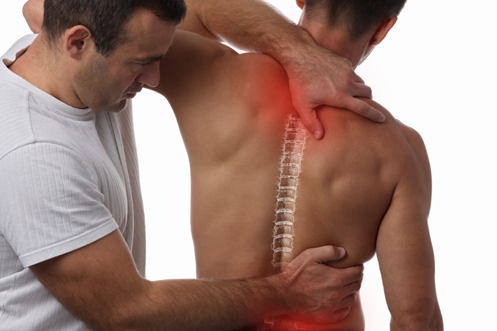
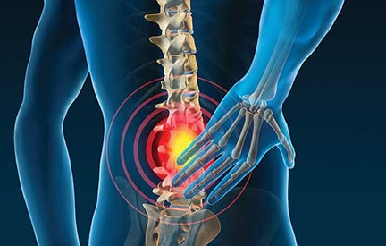
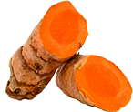
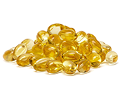
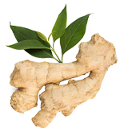

Advertorial
This Curcumin blend is revolutionizing pain relief for patients - Now available to the Public
Wednesday, March 04 by Rob Harris
Turmeric curcumin extract has been known for thousands of years as an anti-inflammatory and effective pain relief treatment. In contrast to a high-turmeric diet or traditional supplements, chronic pain sufferers can finally be relieved of pain using this revolutionary new treatment with vastly improved results. No prescription is required to experience this powerful yet safe formula that's now available to the public in limited quantities.
A Natural Solution for Drastically Improved Pain Relief
If you've suffered from chronic pain, you know the limitations of over-the-counter remedies. Sure, traditional painkillers, such as ibuprofen and acetaminophen, show up in most medicine cabinets, but they can also cause serious damage to the liver and digestive tract. Prescription pain and inflammation medications can also come with a host of side effects. And let's be honest, sometimes they just don't seem to work.
Fortunately there's a powerful new chronic pain and inflammation solution that's immediately available to consumers with no side effects. Doctors are hailing this innovative product as a safer alternative to prescription anti-inflammatories and a far more effective option than traditional turmeric supplements. Multiple recent studies have found that this formula is, in fact, the most effective form of turmeric curcumin available today.
It's quickly gaining traction among professional athletes who need to manage pain and inflammation on a daily basis. With no side effects and numerous benefits, including improved digestion, liver support, cognition and cardio health, it's the "Swiss Army Knife" supplement that's perfect for high-impact athletes. This groundbreaking new product is PuraThrive's Curcumin Gold.
To celebrate Curcumin Gold’ public launch, you can save up to $147 on a multi pack and gain almost 6 months of pain relief for under $1 a day.
GET CURCUMIN GOLD!
How It Works
Turmeric curcumin is known for its natural anti-inflammatory properties, but it's also known for its poor absorption into the body, or reduced bioavailability. Most turmeric supplements, in fact, only offer about 3-4% of the compound's full healing power. What makes PuraThrive Curcumin Gold different is a scientifically developed formula that offers 185x better bioavailability when compared with other products.
To achieve this superior level of bioavailability, PuraThrive uses a patented delivery system that helps bring the maximum level of healing into the body. The curcumin compounds are encapsulated in healthy fats, called micelle liposomes, allowing them to travel safely through the digestive system for complete absorption. For even more anti-inflammatory power, the turmeric in Curcumin Gold is blended with a vegan DHA omega-3 fatty acid and ginger oil extract. This triple threat of healing compounds makes PuraThrive's Curcumin Gold an ideal choice for people seeking a single, powerful multipurpose supplement.
This stuff has absolutely made a huge difference in my life. I used to be overweight, I work out a lot, I do beat the heck out of my body. Even though, I'm a little bit younger, I still deal with a lot of joint pain. And now, I can't live without this stuff. It really does make me feel good. But most of all, it makes my joints feel refreshed.
-Thomas DeLauer *
Order Soon to secure your order.
Curcumin Gold is flying off the shelves!
Approved by Fitness and Nutrition Leaders
Since becoming available to the public, PuraThrive's Curcumin Gold has also become a preferred product for professional trainers and nutritionists. One of the biggest supporters of this product is Thomas DeLauer, celebrity trainer, author and life coach. He has written several books about optimizing diets, muscle growth and recovery, including "The Superfood Detox Code," and "Top 10 Intermittent Fast Hacks." DeLauer is also a popular YouTuber, having gained thousands of fans by sharing his journey from being an overweight nine-to-fiver to adorning the cover of weightlifting magazines. For DeLauer, PuraThrive Curcumin Gold offers anti-inflammatory results that have had an impact on his entire life.
As a professional trainer and model, DeLauer puts in tons of hours at the gym and in his own words, "beats the heck" out of his body. In his review of the product, DeLauer explains that Curcumin Gold reduces his inflammation fast and leaves his joints feeling refreshed, which helps him endure workouts longer and keeps his mind sharp in his day-to-day life. He says, "I feel more clear when I'm at the office, I feel more clear when I'm filming, I feel more clear when I'm with my family, and it all flat out has to do with the reduction of inflammation in my body.
Thomas DeLauer is a high-performance athlete but in his opinion, it's also a great option for seniors. According to DeLauer, seniors need to take special care to mitigate any unnecessary damage to internal organs, so it's worth avoiding aspirin and ibuprofen. Instead, it's better to choose a natural alternative like Curcumin Gold, "so you can keep your organs healthy all while in the pursuit of feeling a little bit better in the joints when you're over the hill."
Healing Power of Three Powerful Active Ingredients
Curcumin Gold is carefully formulated to help you thrive
-

CURCUMIN EXTRACT
One of the most powerful anti-inflammatory compounds known to man. Helps to quell joint pain, protect the heart & brain, and support all around wellness.
-

ALGAE DERIVED DHA
A plant-based omega-3 fatty acid derived from a natural, solvent-free extraction process. Crucial for maintaining a healthy heart and sharp cognitive function.
-

GINGER OIL EXTRACT
Another powerful anti-inflammatory and antioxidant. Can reduce symptoms of pain, support digestion, and improve insulin sensitivity.
To celebrate Curcumin Gold’ public launch, you can save up to $147 on a multi pack and gain almost 6 months of pain relief for under $1 a day.
GET CURCUMIN GOLD!Four Reasons Why Curcumin Gold is a Breakthrough in Pain Relief
1
Superior Pain Relief
Turmeric curcumin extract HAS BEEN USED as a powerful remedy in ancient medical systems FOR THOUSANDS OF YEARS. Curcumin Gold uses potent Curcumin Extract, clinically shown to help QUELL INFLAMMATION, REDUCE JOINT PAIN and support long-term health.
2
Trusted by Doctors
Curcumin Gold is already used by many doctors to help people relieve pain and inflammation, speed up their recovery, and helps them enjoy living life to the fullest again.
3
100% Side Effect Free
Curcumin Gold contains a unique blend of powerful anti-inflammatory compounds that can help quell pain and inflammation just as effectively as NSAIDs, but without the potential health risks.
4
Breakthrough Medicine Technology
The patented Micelle Liposomal Delivery of Curcumin Gold is unprecedented with 185x better absorption! That means you get a powerful, soothing dose of anti-inflammatory compounds right into the cells where you need them most, supporting joint, brain and immune health.
Order Soon to secure your order.
Curcumin Gold is flying off the shelves!
Proven Performance Backed by Clinical Trials
PuraThrive submitted Curcumin Gold for a clinical trial to test its patented micelle liposomal delivery system against other forms of turmeric curcumin supplements. Published in the Journal of Molecular Nutrition & Food Research, the study was a crossover trial that included 23 subjects. Each participant was given a 500mg dose of curcunimoids in varying forms, and blood samples were collected every 24 hours. The blood samples were tested for peak levels of curcuminoids and the relative levels of bioavailability were recorded.
Results showed that curcumin lecithin had 4x absorption in the blood, turmeric oils had 7x absorption and curcumin in combination with black pepper had approximately 20x absorption. The micelle liposomal system, used in PuraThrive's Curcumin Gold, offered the greatest bioavailability by far, with 185x levels of curcuminoids absorbed into the blood. Now that's a breakthrough performance.
What People Say about Curcumin Gold

KIM H. / CHICAGO, IL
"Worth its weight in... gold. My hubby had a sore shoulder for years; didn't know why. After 2 months taking the Gold he remarked with surprise, "Hey! I don't have that shoulder pain anymore!" Apparently it had been dissipating gradually, and finally he realized it was gone. We take it as a preventative, but this was a welcome (and predictable) result." *
PENNY M. / GA
"I'm half way through my first bottle and my osteoarthritis knees are much better. Getting ready to order more. I'd say give it a try." *
LAURA C / LOUISVILLE, KY
"Great Results!!I experienced a noticeable decrease in the pain associated with my arthritic knees." *
GLENYS E. / NEW TRIPOLI, PA
"This product delivers. After the 2nd dose the inflammation in my body was curbed. I truly appreciate a good nights sleep and this product provided it (no pain = excellent rest and sleep)." *
-
"I have had my knee pain significantly reduced since using Curcumin Gold for 3+ weeks. I will continue to use it and stop taking the other supplements that I was taking."
- Richard, Crossfit Athlete *
-
"For years I have suffered with sciatica pain going down my right side. It is so painful that even sitting hurts. I tried your solution...I was pain free. It works! Thank you for helping me find relief."
- Norma Marsh, Sciatica Patient *
-
"I have severe lower back issues. This Liposomal Curcumin product provides relief. I have recently reordered because I feel a definite difference."
- Carl, Golfer *
To celebrate Curcumin Gold’ public launch, you can save up to $147 on a multi pack and gain almost 6 months of pain relief for under $1 a day.
GET CURCUMIN GOLD!180 Day Money Back Guarantee
Curcumin Gold is so confident that its formula relieves pain and inflammation effectively that every bottle comes with a 180-day 100% risk-free money back guarantee.
What this means is that if you feel no reduction in your pain, you haven’t gained the mobility you hoped for, or you're dissatisfied for any reason at all Curcumin Gold will refund every cent. No questions asked.
This makes Curcumin Gold a 100% risk free purchase. You either experience a life transforming reduction in pain or you get your money back.
Pain Relief for $1/Day
One Curcumin Gold bottle contains 8oz of formula. That’s enough for 24 days of continuous pain relief. And when you consider Curcumin Gold works twice as long as most painkillers, Curcumin Gold can save you hundreds of dollars a year.
Select your preferred pack size while Curcumin Golds’ discounts are still available.
Hurry! only 75 left in stock.
Try Curcumin Gold Now,
100% Risk Free!
You can order with confidence knowing all orders of Curcumin Gold are backed by a 180 day, no questions asked, 100% money back guarantee! So you can try it at no risk to you!
Other Similar Remedies won’t offer anything as incredible as this, so click on the button below to order yours now (before it runs out of stock again!) ORDER NOW.
Facebook Reviews & Ratings
Thankful for this product.You want to say,trust me it really really works.Thank you!
Posted by Christine Broughton on November 15, 2019 *
I placed my order and got it a very timely manner, thank you! Could someone please tell me the recommended daily
dosage of the Turmeric?
Posted by Pamela Cremeens Chester on June 27, 2019 *
I have been taking the B12 and the Turmeric for about 3 months and just added the B and C liquid. The purathrive line is
one of the best...
Posted by Maija Damiano on April 15, 2019 *
I am not selling anything, but this product is what helped me to lessen my pain killers, which included an opiod...
Posted by Robin Oickle on September 2, 2018 *
Get Curcumin Gold Pain Relief Today!
- Reduce Pain and Inflammation In Minutes With this
Breakthrough New Approach. - Non-GMO and free from allergens.
- 100% vegetarian friendly
- Cutting edge purification ensures undetectable
taste or odor.